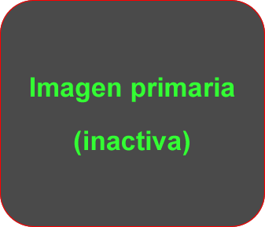
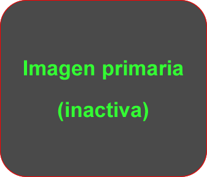
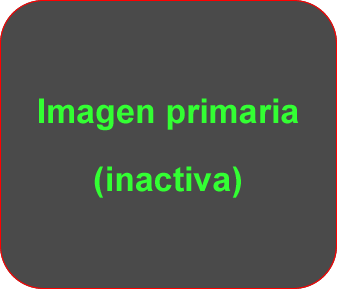
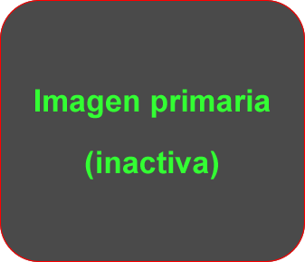

Roll Over:
Roll Over: Diseñar la web de la figura con las dos imágenes primarias mostradas. Al pasar el ratón sobre la imagen superior se sustituyen ambas por las secundarias también mostradas en la figura. Al retirar el ratón se volverá a la situación original. Si pulsamos sobre la imagen secundaria superior se cerrará la ventana.
Demostración del efecto sustitución en imágenes
 

 
